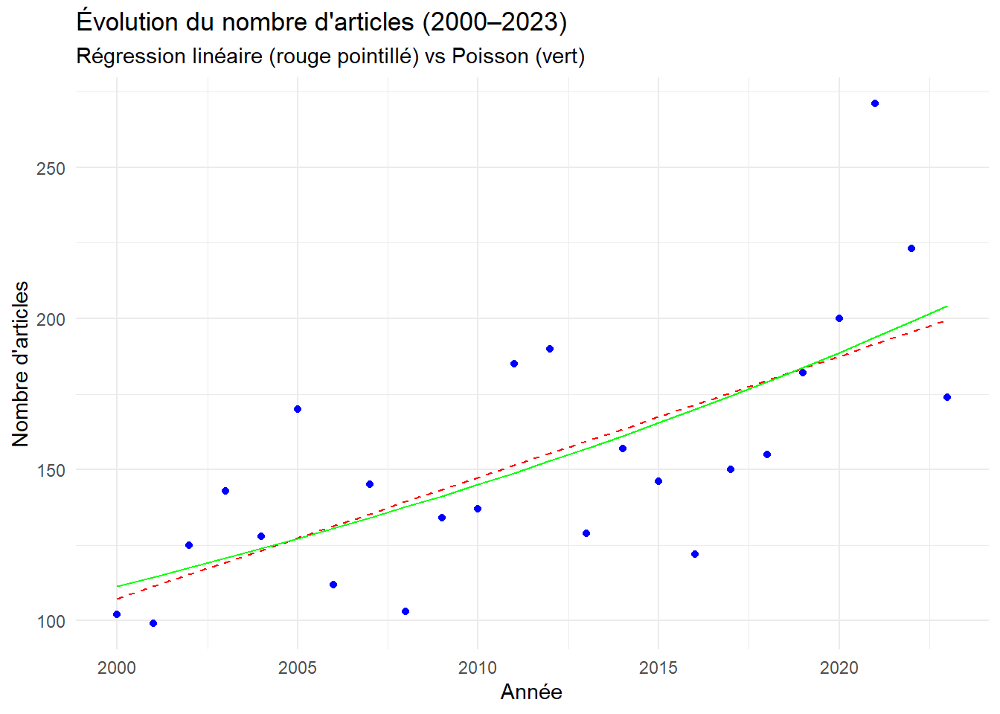
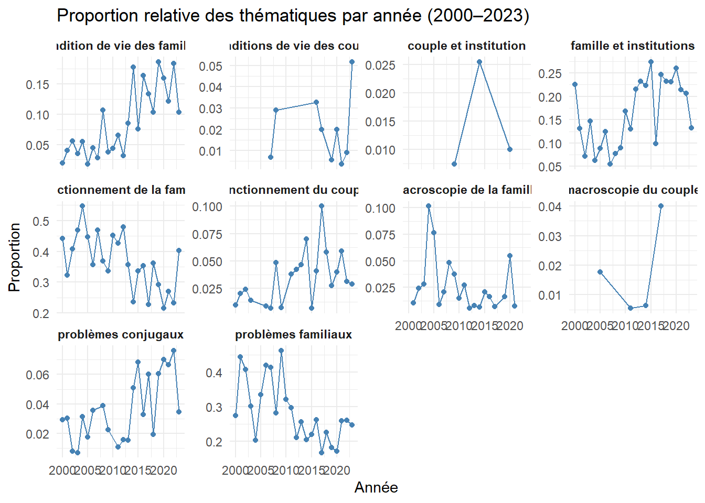
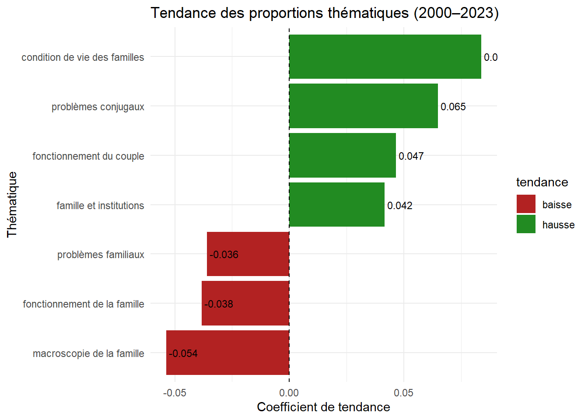
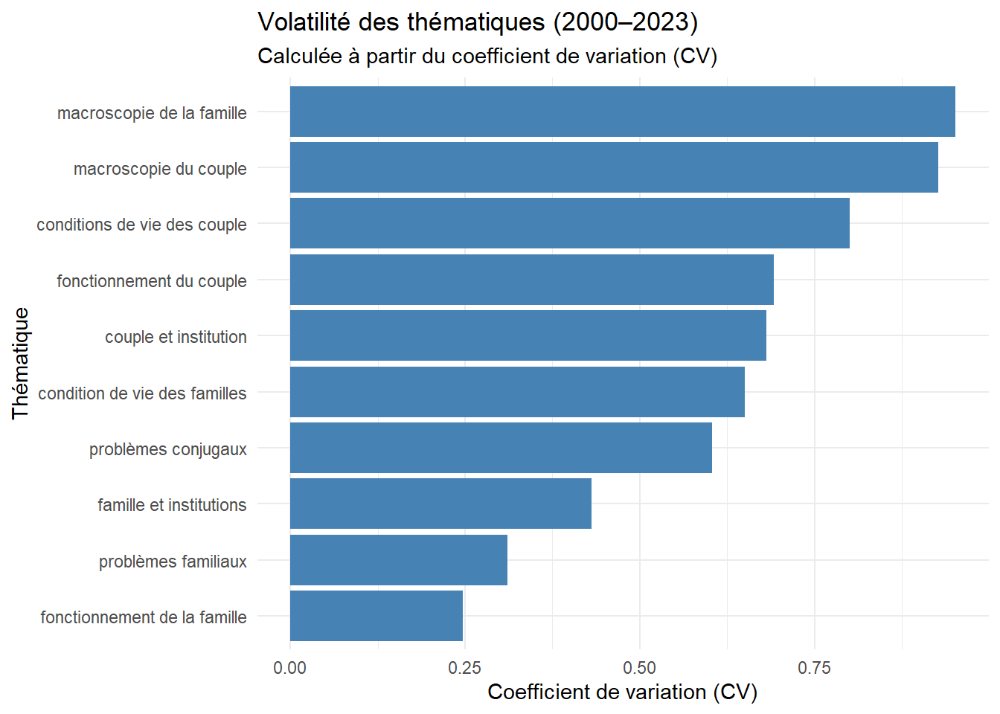

Analyse des thèmes dans la base de données Famili@
Méthodologie augmentée par l’IA
Utilisation appliquée de l'IA
Introduction
Dans cette nouvelle publication en lien avec la base de donnée Famili@ — qui ouvre une série d’analyses —, je propose un regard macro sur le champ. L’idée ? Commencer large, pour mieux plonger ensuite.
Pourquoi débuter aussi globalement ? Parce que comprendre une dynamique disciplinaire exige d’abord de savoir si la production scientifique elle-même est en croissance, stagnation ou régression. Mais aussi parce que les thématiques proposées par la base Famili@ sont elles-mêmes construites à un niveau assez macro : elles regroupent les écrits sous de grandes catégories comme fonctionnement du couple, problèmes familiaux, ou familles et institutions.
C’est donc à la fois en regardant le nombre d’articles publiés et la distribution de ces articles à travers les grandes thématiques que j’ai cherché à cerner les grandes tendances de la période 2000 à 2023.
Un mot important : j’ai volontairement exclu les années 2024 et 2025 de l’analyse, car le nombre d’articles y était très faible. Il est fort probable que plusieurs publications récentes n’aient pas encore été intégrées à la base de données, ce qui aurait faussé les résultats.
Méthodes
Les données utilisées proviennent de la base Famili@, qui regroupe les publications scientifiques sur la famille au Québec depuis 1998. Je les ai extraites directement du site web, puis nettoyées et restructurées afin de bâtir une base de données adaptée à l’analyse.
Dans cette première phase, mon objectif était de tracer un portrait d’ensemble de la recherche en psychologie familiale au Québec. Pour ce faire, j’ai choisi une stratégie d’analyse en trois temps. J’ai d’abord examiné l’évolution du nombre d’articles publiés chaque année, en recourant à deux modèles statistiques complémentaires : une régression linéaire, pour capturer la tendance générale, et une régression de Poisson, plus adaptée aux données de type comptage.
J’ai poursuivi avec une analyse des thématiques principales associées aux articles. Celles-ci sont définies par la base Famili@ selon un découpage macro, reflétant les grands axes de la recherche sur la famille. J’ai donc examiné d’une part le nombre brut d’articles par thématique et par année, et d’autre part leur poids relatif selon les années.
Pour enrichir cette lecture, j’ai appliqué deux types d’analyses : une régression binomiale pondérée pour détecter les thématiques dont la proportion évolue significativement dans le temps, et un calcul du coefficient de variation (CV) pour estimer leur stabilité ou volatilité d’une année à l’autre.
Résultats
Évolution du nombre de publications
Dans un premier temps, je me suis intéressé à l’évolution globale du volume d’articles scientifiques. L’analyse du nombre d’articles publiés annuellement entre 2000 et 2023 met en évidence une croissance significative de la production scientifique. Une régression linéaire montre une tendance positive (β ≈ 3.91), avec un effet significatif (t(22) = 8.45, p < .001). Le modèle de Poisson vient appuyer cette observation (β ≈ 0.036, z = 7.42, p < .001). Le graphique ci-dessous présente les pentes des régressions et le nombre d’articles publiés à chaque année.
Une diversité de thématiques… inégalement réparties
Ensuite, j’ai exploré les thématiques attribuées aux articles, certaines se démarquent rapidement. En termes de volume brut cumulé entre 2000 et 2023, les thématiques les plus représentées sont :
Fonctionnement du couple (n = 189 articles)
Fonctionnement de la famille (n = 172 articles)
Familles et institutions (n = 163 articles)
Problèmes familiaux (n = 153 articles)
Ces chiffres confirment leur popularité au sein de la base de donnée. Toutefois, c’est en examinant les proportions relatives de ces thématiques d’une année à l’autre que des tendances différenciées émergent, certaines thématiques gagnant ou perdant en importance au fil du temps, indépendamment du nombre total d’articles publiés chaque année. Les graphiques ci-dessous présentent l’évolution de l’importance relatives des thématiques.

Des tendances thématiques marquées
L’analyse des proportions relatives par régression binomiale indique que certaines thématiques présentent des tendances significatives au fil des années. Parmi celles-ci, conditions de vie des familles (β = 0.084, p < .001), familles et institutions (β = 0.042, p < .001), problèmes conjugaux (β = 0.065, p < .001), et fonctionnement du couple (β = 0.047, p = .002) affichent des tendances haussières notables. À l’inverse, des baisses significatives sont observées pour fonctionnement de la famille (β = -0.038, p < .001), problèmes familiaux (β = -0.036, p < .001) et macroscopie de la famille (β = -0.054, p = .004).

Des thématiques stables… d’autres plus volatiles
L’analyse de la volatilité, mesurée par le coefficient de variation (CV), met en évidence une hétérogénéité importante dans la stabilité des thématiques au fil du temps. Les thématiques Macroscopie de la famille (CV = 1.28), Conditions de vie des couples (CV = 1.14), et Fonctionnement du couple (CV = 1.02) montrent une grande variabilité interannuelle. À l’inverse, des thématiques comme Fonctionnement de la famille ou Familles et institutions présentent des CV faibles, témoignant d’une présence plus constante dans le champ de recherche. Le graphique ci-dessous présente les résultats pour l’analyse de la volatilité.

Discussion
Croissance de la production scientifique
L’interprétation des résultats permet d’approfondir les constats empiriques présentés ci-dessus. D’abord, la croissance annuelle moyenne de la production (environ 4 articles par an) indique une vitalité marquée de la recherche québécoise sur la famille en psychologie. Ce rythme soutenu reflète probablement un intérêt croissant pour les enjeux familiaux dans les sphères académiques, mais aussi dans les milieux d’intervention et de politiques publiques.
Il faut, toutefois, aussi voir que ce constat s’inscrit également dans une tendance mondiale : la littérature bibliométrique montre une croissance soutenue de la production scientifique dans l’ensemble des disciplines. Par exemple, Bornmann et Haunschild (2020) rapportent une croissance moyenne annuelle de 4,1 % des publications scientifiques entre 1980 et 2020, avec un doublement du volume de publications tous les 17 ans. Le National Science Board (2023) note aussi une augmentation de 59 % des publications mondiales en sciences et ingénierie entre 2012 et 2022, soit un rythme moyen de 4,7 % par an. Cette dynamique globale suggère que la hausse observée dans le champ de la psychologie familiale au Québec est cohérente avec un élargissement généralisé de la production scientifique à l’échelle internationale.
Thématiques en transformation
Plusieurs thématiques affichent des évolutions significatives. Notamment, les thématiques conditions de vie des familles (β = 0.084, p < .001), familles et institutions (β = 0.042, p < .001) et problèmes conjugaux (β = 0.065, p < .001) sont en hausse. Cette croissance pourrait signaler un recentrage sur les réalités concrètes des familles, les services qui leur sont offerts et les tensions conjugales — possiblement accentués par des événements sociaux récents ou par les transformations des politiques publiques et des services de soutien.
Inversement, des thématiques comme fonctionnement de la famille (β = -0.038, p < .001), problèmes familiaux (β = -0.036, p < .001) ou encore macroscopie de la famille (β = -0.054, p = .004) présentent des baisses significatives. Ce glissement suggère peut-être une redéfinition des priorités scientifiques, où les approches plus larges ou conceptuelles cèdent la place à des objets de recherche plus ciblés et contextualisés, davantage ancrés dans les réalités vécues par les familles contemporaines.
Il faut garder en tête que je n’ai pas accès à la façon précise dont les recherches sont classés. Il est aussi possible que les changements soient associés, simplement, à la lecture des personnes responsables de la base. Beaucoup d’articles peuvent s’inscrire dans plusieurs thématiques et donc il est possible que des préférences personnelles puissent expliquer les différences.
Stabilité et volatilité des thèmes
Les données sur la volatilité complètent cette lecture. Certaines thématiques, comme familles et institutions, présentent une présence régulière dans les publications, témoignant d’un intérêt soutenu. D’autres, comme macroscopie de la famille ou fonctionnement du couple, se caractérisent par une présence plus erratique. Cela pourrait indiquer des objets de recherche plus sensibles aux variations conjoncturelles — économiques, politiques ou médiatiques —, ou encore des thématiques moins intégrées dans les programmes de recherche structurants.
Cette variabilité peut aussi refléter une fragmentation des intérêts de recherche, ou encore une expérimentation méthodologique autour de nouveaux objets moins stabilisés dans la littérature.
Références
Bornmann, L., & Haunschild, R. (2020). Growth rates of modern science: A bibliometric analysis based on the number of publications and cited references. Journal of the Association for Information Science and Technology, 71(2), 187–199. https://doi.org/10.1002/asi.24154
National Science Board. (2023). The State of U.S. Science and Engineering 2023. National Science Foundation. https://ncses.nsf.gov/pubs/nsb20231